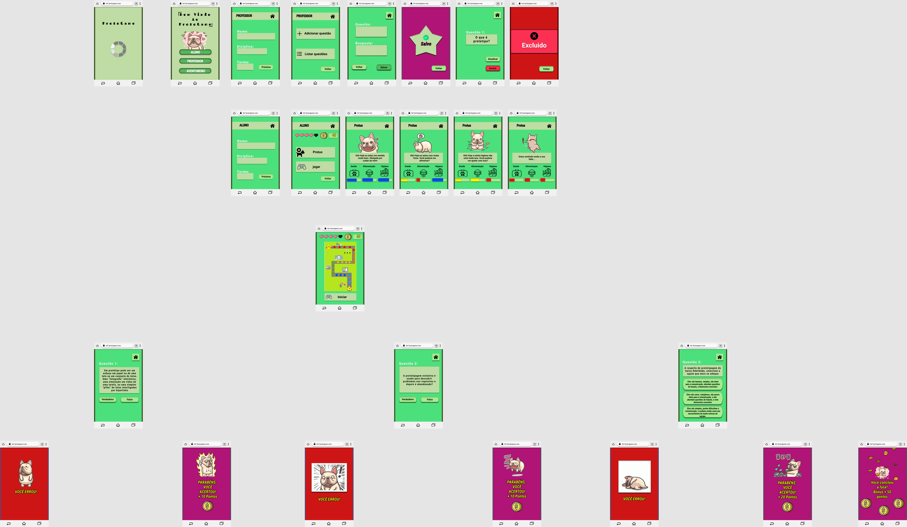
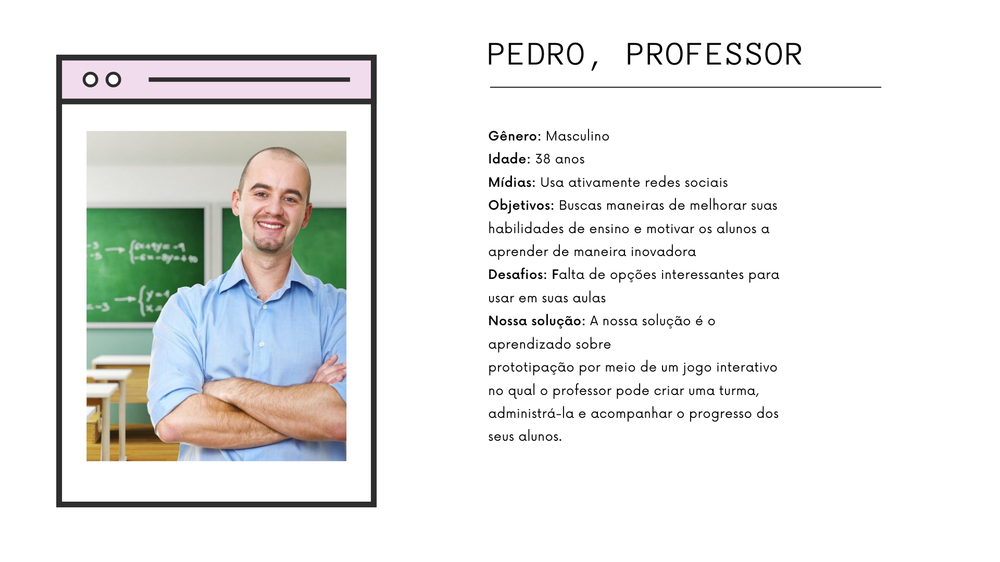
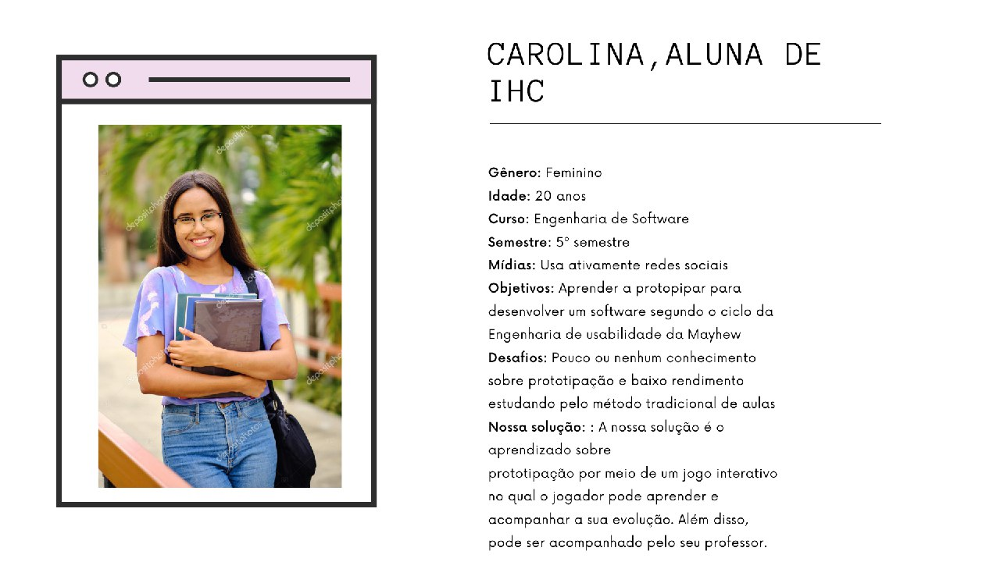

Avaliação do Protótipo de Alta Fidelidade do ProtoGame
| Data | Versão | Descrição | Autor(es) |
|---|---|---|---|
| 14/11/2020 | 0.0 | Criação do documento | Iolane Andrade |
| 15/11/2020 | 0.1 | Gravação da avaliação | Iolane Andrade |
| 15/11/2020 | 0.2 | análise da avaliação | Iolane Andrade |
| 16/11/2020 | 0.3 | Imagem do protótipo de alta fidelidade | Iolane Andrade |
| 16/11/2020 | 0.4 | Relato e avaliação do protótipo de alta fidelidade pela Persona Pedro | Gabriela |
| 01/12/2020 | 0.5 | Relato e avaliação da Persona Carolina e Revisão do documento | Stéfane Souza |
Protótipo de Alta Fidelidade
A figura 1 ilustra a primeira parte do prototipo de alta fidelidade do projeto ProtoGame. Contendo fluxo do aluno ao responder uma questão e o fluxo do professor ao criar turma e adicionar questões.
Figura 1: Prototipo de Alta Fidelidade - Parte 1

Fonte: Autor (2020)
Protótipo Utilizado nas Avaliações
Para as avaliações foi utilizado esta primeira parte do protótipo de alta fidelidade. Nesta fase, o protótipo engloba apenas o fluxo do aluno descrito nos casos de teste.
Preparação
Ao realizar uma avaliação, proceda da seguinte maneira:
- Siga as instruções definidas na avaliação;
- Comece a avaliação com uma apresentação;
- Busque falar em voz alta todos os passos que você está seguindo durante a gravação da avaliação;
- Responda as questões definidas no documento do planejamento da avaliação;
Avaliação 1
Participante:
Figura 2 - Persona 1

Fonte: Autor (2020)
Objetivos da Avaliação:
A participante, Matilde deverá seguir as instruções definidas nas duas tabelas abaixo. Tendo como objetivo 1 "Iniciar um jogo e responder questões corretamente." e objetivo 2 "Iniciar um jogo e responder alguma questão incorretamente."
Tabela 1 - Avaliação da Persona 1: Objetivo 1
| Item | Descrição |
|---|---|
| Objetivo 1: | Iniciar um jogo e responder questões corretamente. |
| Ator: | Aluno. |
| Pré-condição: | O Aluno já está cadastrado no sistema. |
| Procedimentos: | 1. Entrar no jogo ProtoGame e selecionar a opção "Aluno"; |
| 2. Selecionar a opção "Próximo"; | |
| 3. Selecionar a opção "Jogar"; | |
| 4. Selecionar a opção "Iniciar"; | |
| 5. Responder a primeira questão como "verdadeira"; | |
| 6. Responder a segunda questão como "falsa"; | |
| 7. Responda a terceira questão selecionando a primeira opção; | |
| Resultado esperado: | É esperado que o aluno acerte todas as questões e passe de fase. |
Fonte: Autor (2020)
Tabela 2 - Avaliação da Persona 1: Objetivo 2
| Item | Descrição |
|---|---|
| Objetivo 2: | Iniciar um jogo e responder alguma questão incorretamente. |
| Ator: | Aluno. |
| Pré-condição: | O Aluno já está cadastrado no sistema. |
| Procedimentos: | 1. Entrar no jogo ProtoGame e selecionar a opção "Aluno"; |
| 2. Selecionar a opção "Próximo"; | |
| 3. Selecionar a opção "Jogar"; | |
| 4. Selecionar a opção "Iniciar"; | |
| 5. Responder a primeira questão como "verdadeira"; | |
| 6. Responder a segunda questão como "verdadeira"; | |
| Resultado esperado: | É esperado que o aluno erre a segunda questão e tenha que reiniciar o jogo. |
Fonte: Autor (2020)
Coleta de dados
A coleta de dados ocorreu por meio da aplicação e gravação da avaliação heurística, feita com a participante Matilde.
Para acessar a gravação da avaliação 1 >>clique aqui.<<
Consolidação e relato dos resultados
A avaliação com a Matilde gerou bons resultados. Para uma versão inicial do protótipo, demonstrou está coerente com a ideia do produto. A participante disse: "Parece ser coerente com o estudo de prototipação e o design parece bem simples entender então eu acredito que está adequado." A organização das atividades também estão simplificadas e claras. A participante disse: "Sim para mim estava bem claro. [...] Se eu errar eu sou levada para o início do jogo, se eu acerto eu consigo prosseguir. Então está bem claro". As atividades também foram avaliadas como intuitivas e as informações simples de compreender . A participante disse: " Sim. É bem intuitivo, porque são poucas funcionalidades. É um protótipo bem simples então acaba que a gente não tem muito aonde se perder no jogo. [...] "Sim. São bem simples como eu falei, são poucas atividades no jogo então a gente não tem como se perder muito". No geral, a ideia do produto foi considerada agradável. A participante disse: "A ideia do produto é agradável sim. Eu gostei bastante da ideia. Questões simples e aí vai dificultando o nível. [...] eu gostei da ideia do produto".
No geral a avaliação do protótipo, na atividade do aluno responder uma questão, atendeu as expectativas iniciais da equipe. Atividades simples, claras, coerentes e agradavel.
Avaliação 2
Participante:
Figura 3: Descrição da Persona 4
{kind=link}

Fonte: Autor (2020)
Objetivos da Avaliação:
O participante, Pedro deverá seguir as instruções definidas nas duas tabelas abaixo. Tendo como objetivo adicionar novas questões na aplicação e gerenciá-las.
Tabela 3 - Avaliação da Persona 4: Objetivo 1
| Item | Descrição |
|---|---|
| Objetivo 1: | Criar uma turma e incluir questões |
| Ator: | Professor |
| Pré-condição: | Nenhuma |
| Procedimentos: | 1. Entrar no jogo ProtoGame selecionar a opção "Professor" |
| 2. Fazer seu cadastro como professor | |
| 3. Criar questão | |
| 4. Listar questões | |
| 5. Alterar uma questão | |
| 6. Excluir uma questão | |
| Resultado esperado: | É esperado que o professor consiga gerenciar suas questões |
Fonte: Autor (2020)
Coleta de dados
A coleta de dados ocorreu por meio da aplicação e gravação do teste de usabilidade com a utilização do software Cool Scren Recorder, feita com o participante Pedro.
Para acessar a gravação da avaliação 2 >>clique aqui.<<
Consolidação e relato dos resultados
A avaliação com o Pedro gerou bons resultados, assim como a com a Matilde. O participante gostou da aplicação e não demonstrou dificuldades ao navegar afim de realizar suas tarefas. Além disso, avaliou como sendo útil para seus objetivos. Sugeriu que a aplicação permitisse o professor adicionar tempo para responder cada pergunta, porque assim poderia usar o jogo para aplicar mini testes da disciplina.
A avaliação do protótipo do ponto de vista do professor também obteve resultados positivos.
Avaliação 3
Participante:
Figura 4 - Persona 3

Fonte: Autor (2020)
Objetivos da Avaliação:
A participante, Carolina deverá seguir as instruções definidas nas duas tabelas abaixo. Tendo como objetivo 1 "Iniciar um jogo e responder questões corretamente." e objetivo 2 "Iniciar um jogo e responder alguma questão incorretamente."
Tabela 4 - Avaliação da Persona 3: Objetivo 1
| Item | Descrição |
|---|---|
| Objetivo 1: | Iniciar um jogo e responder questões corretamente. |
| Ator: | Aluno. |
| Pré-condição: | O Aluno já está cadastrado no sistema. |
| Procedimentos: | 1. Entrar no jogo ProtoGame e selecionar a opção "Aluno"; |
| 2. Selecionar a opção "Próximo"; | |
| 3. Selecionar a opção "Jogar"; | |
| 4. Selecionar a opção "Iniciar"; | |
| 5. Responder a primeira questão como "verdadeira"; | |
| 6. Responder a segunda questão como "falsa"; | |
| 7. Responda a terceira questão selecionando a primeira opção; | |
| Resultado esperado: | É esperado que o aluno acerte todas as questões e passe de fase. |
Fonte: Autor (2020)
Tabela 5 - Avaliação da Persona 3: Objetivo 2
| Item | Descrição |
|---|---|
| Objetivo 2: | Iniciar um jogo e responder alguma questão incorretamente. |
| Ator: | Aluno. |
| Pré-condição: | O Aluno já está cadastrado no sistema. |
| Procedimentos: | 1. Entrar no jogo ProtoGame e selecionar a opção "Aluno"; |
| 2. Selecionar a opção "Próximo"; | |
| 3. Selecionar a opção "Jogar"; | |
| 4. Selecionar a opção "Iniciar"; | |
| 5. Responder a primeira questão como "verdadeira"; | |
| 6. Responder a segunda questão como "verdadeira"; | |
| Resultado esperado: | É esperado que o aluno erre a segunda questão e tenha que reiniciar o jogo. |
Fonte: Autor (2020)
Coleta de dados
A coleta de dados ocorreu por meio da aplicação e gravação da avaliação heurística, feita com a participante Carolina.
Para acessar a gravação da avaliação 3 >>clique aqui.<<
Consolidação e relato dos resultados
A avaliação com a Carolina foi considerada um sucesso, assim como as duas anteriores. A participante conseguiu utilizar o protótipo normalmente sem muitas explicações, considerou a ideia do jogo como um todo bem agradável e interessante para ela já que possui uma certa dificuldade em aprender conteúdo de forma mais tradicional. A participante gostou bastante do mascote, Protus, e achou as telas do jogo bem agradáveis visualmente assim como a disposição dos botões também bem legais. Conseguiu realizar os dois objetivos da avaliação que foram completar as questões de forma correta e outra errada. O resultado dessa avaliação foi ótima para o histótico de testes do projeto.